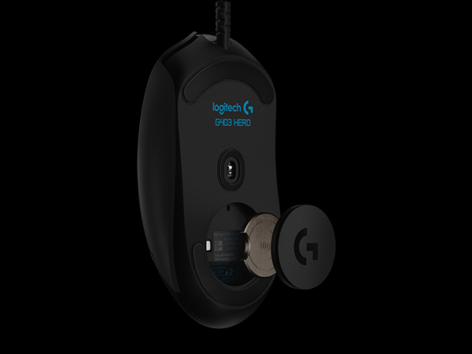
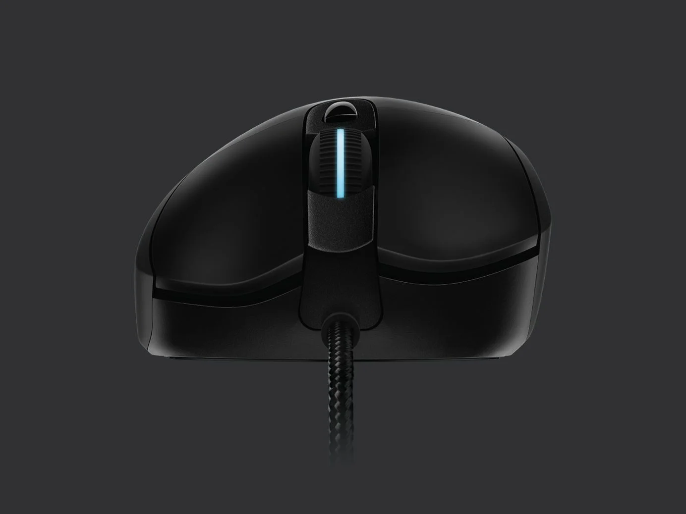

Sensor
HERO 25K
Conheça o sensor de última geração. Com rastreamento 1:1, até mais de 400 IPS e sensibilidade máxima de 100 a 25.600 DPI. Sem suavização, filtragem ou aceleração.
A resposta perfeita que você precisa para cravar a mira, garantir flick shots consistentes ou manter a frieza segurando cada pixel em jogo.

Conforto
Supremo
Com empunhaduras de borracha moldadas nas laterais para oferecer a você maior controle, o G403 foi desenvolvido para se ajustar à sua mão, garantindo horas de conforto.
-
Peso Ajustável
Peso opcional removível de 10g para o balanço perfeito.
-
6 Botões Programáveis
Configure ações complexas através do software Logitech G HUB.
Lightsync RGB
A iluminação RGB de espectro completo com tecnologia de última geração reage às ações no jogo e ao áudio. Personalize animações de cerca de 16,8 milhões de cores com o software para jogos G HUB.

Desempenho Avançado
Com uma taxa de transmissão de 1 ms, o G403 é até 8x mais rápido que os mouses normais. O tensionamento mecânico dos botões os mantêm prontos para disparar sob menor força.
